BUUCTF 刷题笔记——Misc 1
BUUCTF 刷题笔记——Misc 1
签到
- flag 直接给出来了，感恩善待。
这为啥也要记个题解呢，害，强迫症犯了。
金三胖
题目提供了一张动图，就是标题那位，可以看的有几帧奇怪的东西穿插在里面。

直接使用 ps 打开即可在图层中看到每一帧，不过干这个还要用 ps 还是有点奢华了，推荐直接通过在线工具即可。其中三帧正好可以连接成 flag。
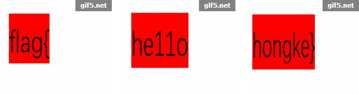
二维码
本题提供了一个二维码图片文件，扫出来只有单纯的文本 secrat is here，并无其余任何东西。

正常情况下我就把这个当 flag 交了，所幸看到师傅们提交之后都错了，就不试这个错了。于是乎重点就不在二维码了，这个图片有点问题，文本形式查看，在文件尾部发现了一些奇怪的东西。
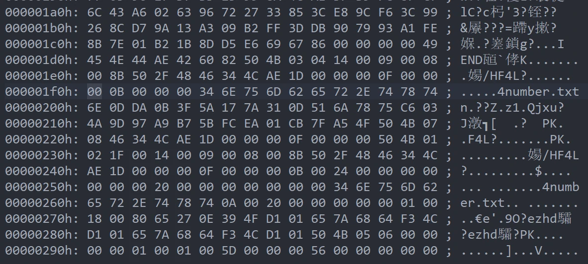紧跟在 png 文件尾 AE426082 之后的 504B0304 为 zip 文件的文件头，因此可以判断图片后隐藏了一个 zip 压缩文件。由于大部分软件都支持根据文件类型仅读取文件头尾范围内的数据，因此本题文件才可被读取为正常文件，同理将后缀名修改为 zip 则文件同样可被正常识别。或者不改后缀名，直接拖入解压软件让其自行判断依然可行。当然这一切建立在前置数据未造成干扰的情况下，本题就属于该情况，当作 zip 文件打开后便发现其中隐藏了一个文本文件 4number.txt，但是无法打开，因为压缩文件被加密。
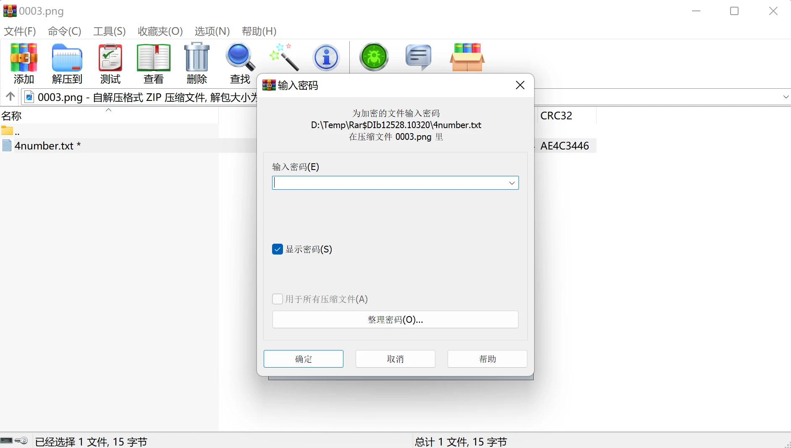文本文件的命名这么可以，不妨认为是一种提示，也就是说密码为四位数字，那就直接上工具暴力破解就行了。由于破解工具也不依赖后缀名，因此直接同样可以对图片文件进行操作。设置好四位数字的暴力破解后，一瞬间就可以破解出密码为 7639。
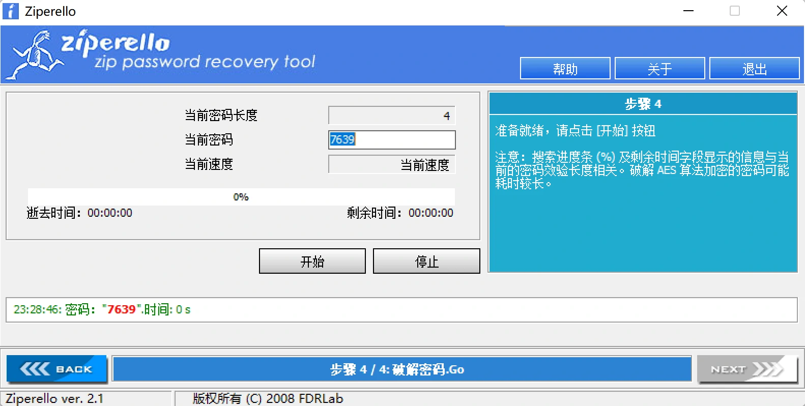接下来走正常解压流程打开文件即可获取 flag，当然 BUU 中需要提交 flag{vjpw_wnoei}。
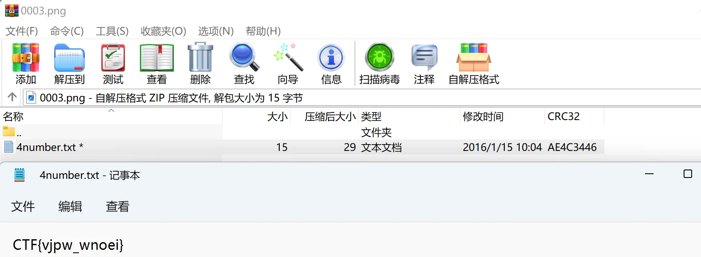
你竟然赶我走
本题文件仅有一张图片。
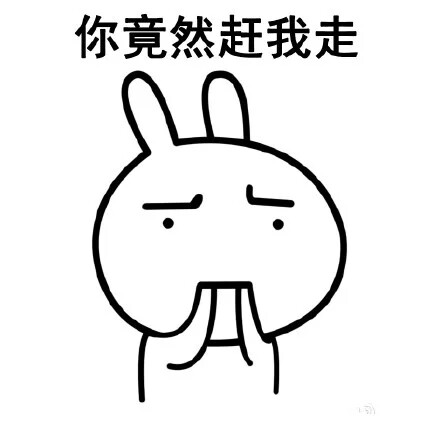使用编辑器打开，发现 flag 就放在文件最后。
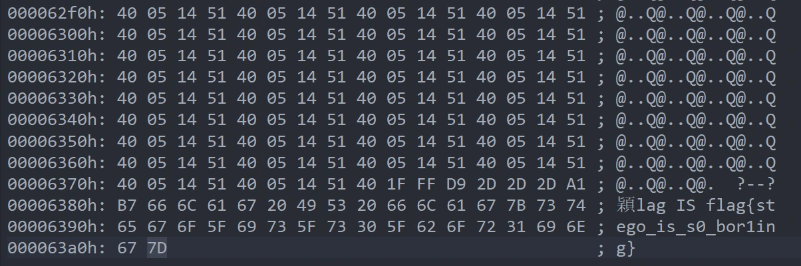因此提交 flag{stego_is_s0_bor1ing} 即可。
N种方法解决
题目提供一个 exe 文件，首先验一下文件，发现程序并非正常的可执行文件，而是 base 加密的文件。
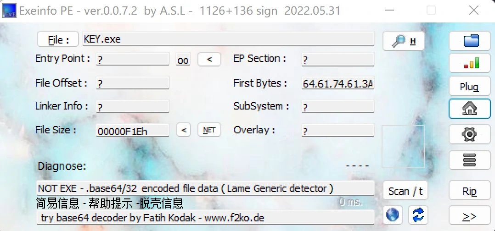使用编辑器打开，发现是一个 base64 编码后的 jpg 图片序列。
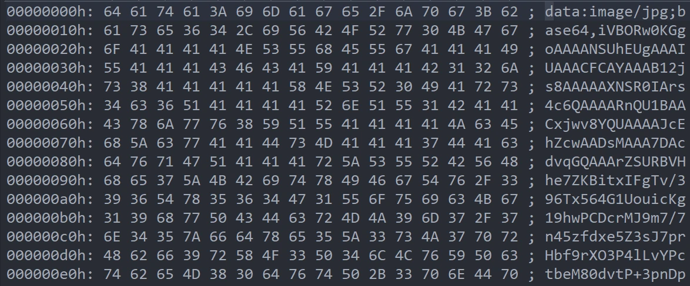解码后是一个二维码，扫描后即可获得 flag。
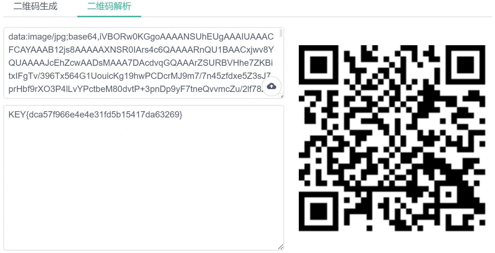提交 flag{dca57f966e4e4e31fd5b15417da63269} 即可。
大白
题目给了一张图片，提示屏幕太小。

图片看着就只有半截，尝试修改文件尺寸，很可能是因为设定了图片尺寸信息而导致部分信息被隐藏。使用编辑器打开，第二行数据前四位表示宽度，紧接着的四位表示高度，这里将高度放大一倍。
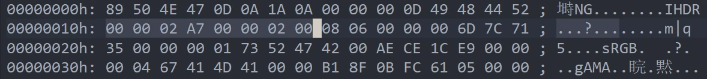再次打开图片即可发现 flag，可以发现图片底部存在透明区域，所以高度还是给多了。

提交 flag{He1l0_d4_ba1} 即可。
乌镇峰会种图
题目提供一张图片，并提示图片中隐藏了信息。
直接观察图片并不能发现什么，因此使用编辑器打开，尾部就是 flag。
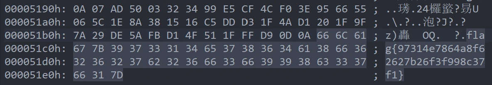提交 flag{97314e7864a8f62627b26f3f998c37f1} 即可。
基础破解
题目提供一个 rar 压缩文件，并提示密码为四位数字，因此直接使用 ARCHPR 爆破即可。密码为 2563
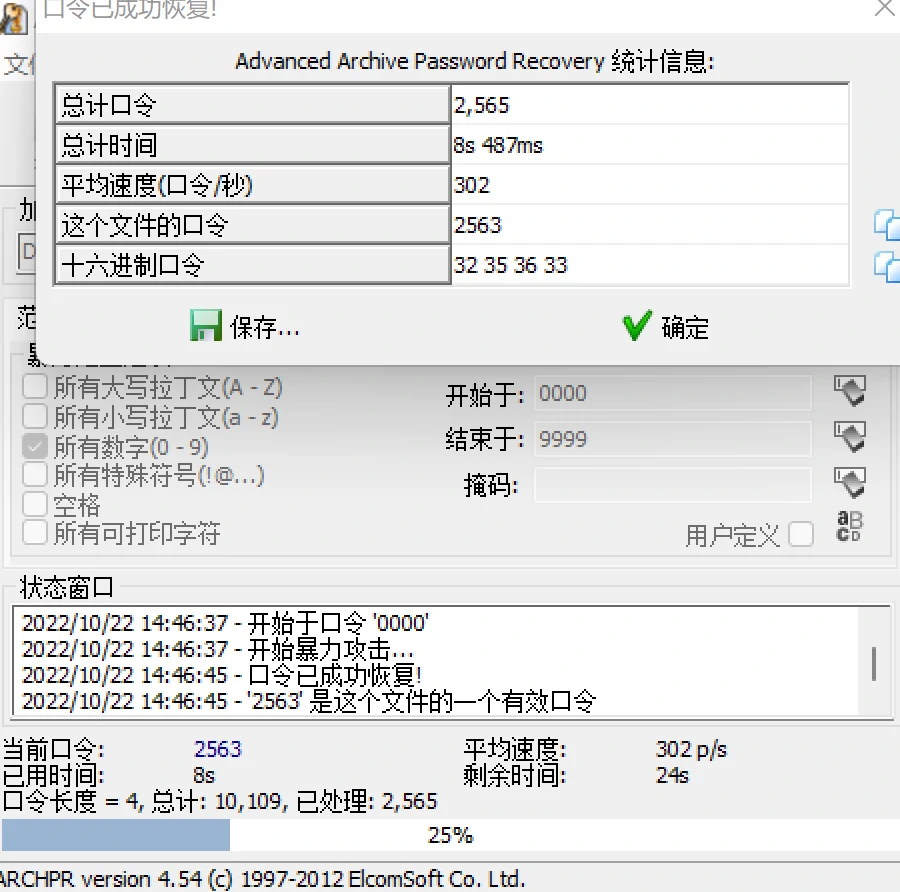打开后文件中仅含有一串文本，等号结尾，应该是 base64 编码，解码后即可获得 flag。
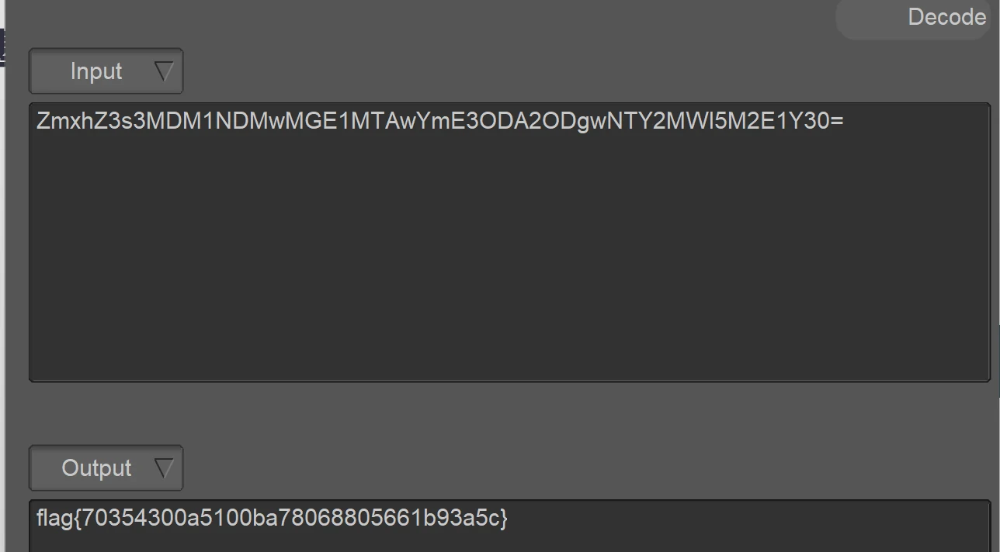提交 flag{70354300a5100ba78068805661b93a5c} 即可。
wireshark
本题提供了一个 wireshark 的数据文件，并提示 flag 就是管理员的密码，因此直接丢进 wireshark 中寻找关键词即可。查找字符串发现第一个数据包中就包含关键词 flag 与 password，依据提示密码值即为目标。
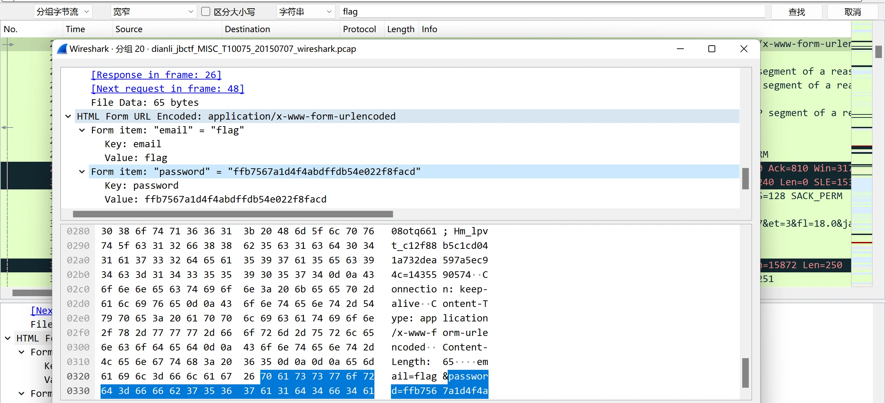提交 flag{ffb7567a1d4f4abdffdb54e022f8facd} 即可。
文件中的秘密
本题提供一张图片，并提示文件中存在隐藏信息。
丢进编辑器中打开，并未找到 flag，但是发现文件首部存在 Exif。
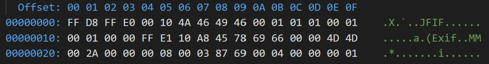EXIF（可交换图像文件格式）可以用来记录数码照片的属性信息和拍摄数据，EXIF可以被附加在JPEG、TIFF、RIFF等文件中，为其增加有关数码相机拍摄信息的内容。缩略图或图像处理软件的一些版本信息。
因此图片很可能在这里记录了信息，查看文件属性，在备注中发现了 flag。
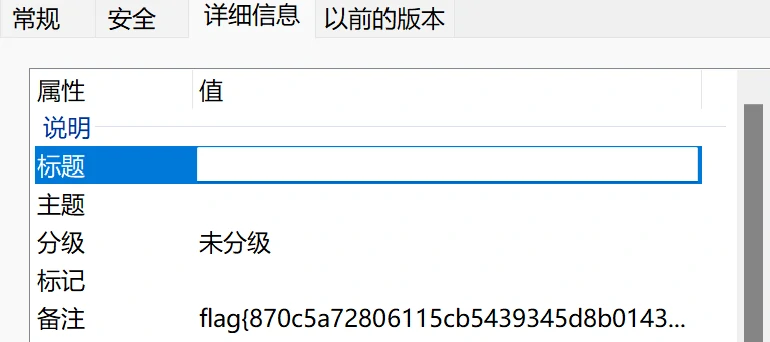提交 flag{870c5a72806115cb5439345d8b014396} 即可。
LSB
题目提供一张中国矿业大学的校徽图片，而唯一的提示便是标题。LSB 表示最低有效位，针对的是 RGB 颜色分量的最低位，该位的变化对图片整体来说可谓毫无变化，至少人眼无法感知变化。因此本题图片应该对最低有效位作了处理。
使用 stegsolve 打开图片，逐层逐位查看图片数据，发现 RGB 分量最低位对应的三个通道都存在隐藏信息。
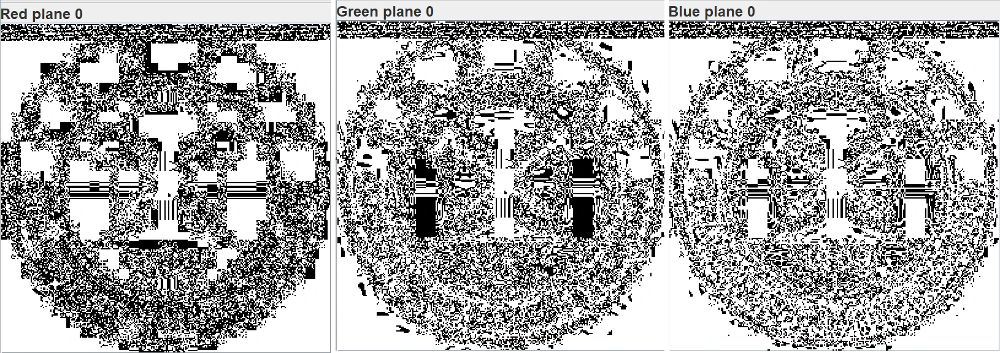直接点击进入 Data Extract 对对应通道的隐藏数据进行提取，Save Bin 后发现是一张二维码。
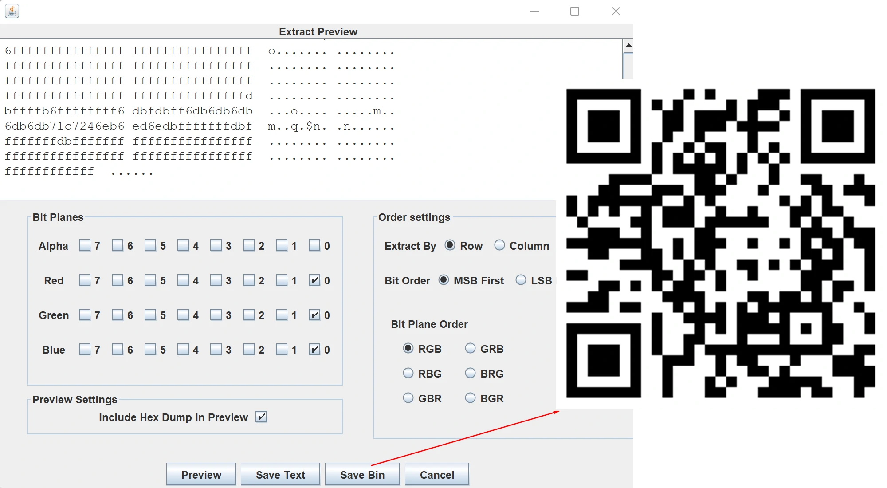扫描二维码便可获得 flag。
提交 flag{1sb_i4_s0_Ea4y} 即可。
zip伪加密
本题提供压缩包，加密无法打开。由于标题提示为未加密，即文件被标为加密但事实上并不含密码。可以直接使用编辑器打开，在数据中找到目录头 504B0102，其后两位为压缩使用的 pkware 版本，再后两位为加密使用的 pkware 版本，再后两位即标识有无加密的全局方式位标记。如图将全局方式位标记的 0900 修改为 0000 即可去除伪加密。
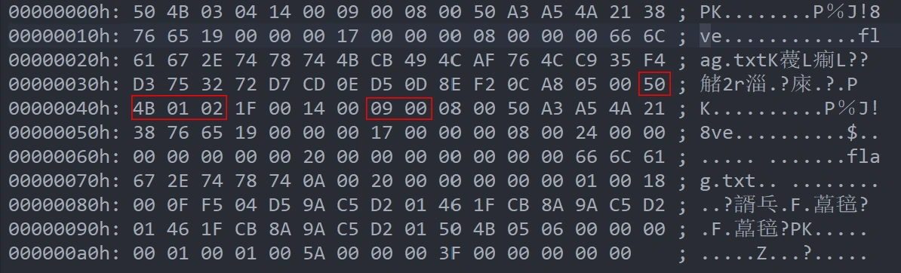然后直接打开压缩文件中的文本即可获得 flag，提交 flag{Adm1N-B2G-kU-SZIP} 即可。
rar
本题提供压缩包，明确告知密码为四位数字，因此直接爆破。得出密码为 8795。
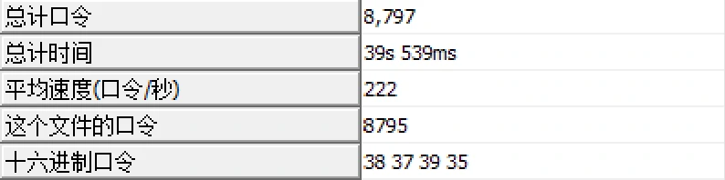然后直接打开压缩文件中的文本即可获得 flag，提交 flag{1773c5da790bd3caff38e3decd180eb7} 即可。
被嗅探的流量
提供的是 wireshark 的数据文件，因此直接打开搜索关键词，然后就发现了 flag。
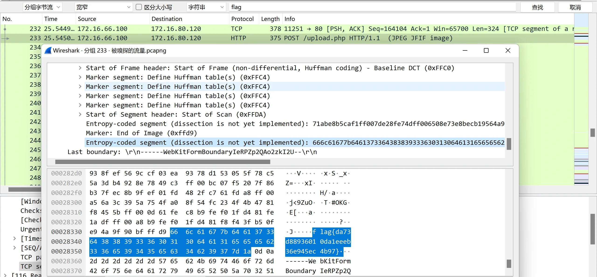提交 flag{da73d88936010da1eeeb36e945ec4b97} 即可。
qr
提供一个二维码，扫开就是 flag。
提交 flag{878865ce73370a4ce607d21ca01b5e59} 即可。
镜子里面的世界
提供一张图片，编辑器打开以及查看属性均为发现有效信息。

使用 stegsolve 打开图片，逐层逐位查看图片数据，发现 RGB 分量最低位对应的三个通道全黑而左上角存在白色区域，因此肯定存在隐藏信息。
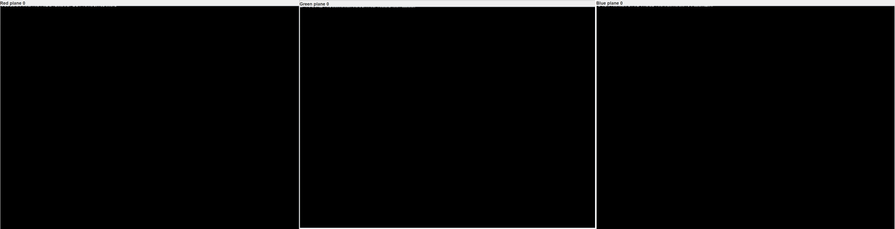进入 Data Extract 对对应通道的隐藏数据进行提取，在文本处便发现 flag。
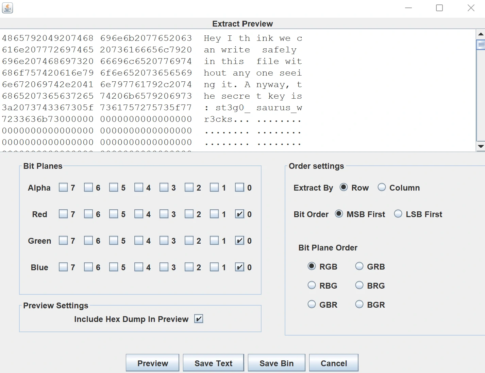提交 flag{st3g0_saurus_wr3cks} 即可。
总结
Misc 也太有意思了！0x10 道试水题玩着玩着就没了。做下来电脑里又多了一堆软件，也是体验完才知道原来 CTF 可以这样玩。目前还没接触到十分复杂的题目，所以基本动两下就完成了，期待一下后面的考题。
这两天没课，所以更新博客也更积极了，希望自己好好保持。